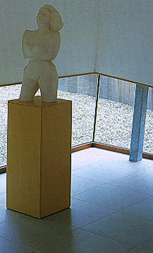

Herman Studio, Los Angeles, 1986
Frederick Fisher
Frederick Fisher, ARCHITECT
Joseph Giovannini and Marie-Claude Beaud |
This studio is situated in a natural landscape
just outside downtown Los Angeles as you can see on the picture.
There was en extremely limited budget so only inexpensive materials
and simple details and forms were used. The windows provide the
facade for a idiosyncratic composition and the rooms for daylight
and views to the natural landscape. On the second picture you
can see the painting studio. Light is coming from several directions
into the room, but the main direction is coming from the corner.
The windows are placed nearby the ceiling so paintings can be
put against the walls.
|
|
|
Wilbrink House, Amersfoort, The Netherlands, 1992-1994
Ben van Berkel
Contemporary European Architects; Volume V
Taschen
|
Ben van Berkel has become well known in The
Netherlands for having designed the Erasmus Bridge in Rotterdam.
In the house in Amersfoort there's no traditional garden present
but only inclining planes covered with gravel as can be seen
on the left photograph. The house has been designed to get a
maximum amount of daylight. Inner areas have been used to provide
for the necessary openings for daylight. On the other photograph
on the left a window near ground level can be seen. On the right
the interior with the same window can be seen. |
 |
|
Building on the prairie, Middleton, Wisconsin, USA, 1995
Studio J.J. InternationalInternational Architecture Yearbook
Images Australia |
This building has a structure made of steel. Because the need
for columns is minimal, the interior can be used in a very flexible
way. The walls are made of concrete blocks. The building is because
of its natural colour and simple geometrical form very neutral.
Where walls meet each other or the roof windows are placed to
provide for daylight. This can be seen on the left picture. On
the picture on the right the interior can be seen. It seems like
the walls are standing loose from each other and the roof is
floating. Because most of the daylight is coming from above (like
outside) the room looks very natural and the distribution is
equable.
|
|